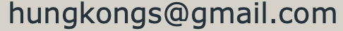

KCAC
📝新冠防疫追踪📝
You're viewing the CHINESE SERVICE page, to view ENGLISH SERVICE page,
click here.'
根据省政府规定，目前允许教会部分容量的会众参加聚会。
如果您需要取消或更改您的报名表请通過電子郵件联系孔传道。

每位成年人需要独自报名，父母可以为18岁以下的子女报名。
請回答這些防疫筛查問題：
1. 过去14日内您是否曾在加拿大境外旅行？
2.过去14日内您是否曾在京士顿以外的红区(control管控区）或灰区（lockdown封锁区）旅行？
3. 过去14日内您是否曾与新冠确诊或疑似病例有过密切接触
4.您是否有下列症状：发热，畏寒，咳嗽，剧烈咳嗽
，气短，咽喉痛，吞咽困难，流鼻涕或鼻塞（非季节性过敏引起）
，味觉或嗅觉丧失，头疼，恶心
，呕吐或腹泻，肌肉痛，极度疲劳
如果您或您的任何一个家人（所有居住在您家中的人）对以上任何一个问题回答是“是”，请留在家中继续在
YouTube上观看。
健康和安全措施
1. 所有2岁以上会众应全程佩戴口罩。
2. 进入教会时请用消毒洗手液消毒。
3. 请与家庭成员以外的弟兄姊妹保持2米距离。
4. 请不要在教会中戴医用手套。
5. 在崇拜前后尽量避免近距离聊天。
6. 请不要在停车场聚集交谈。
教堂卫生措施
1. 请使用东南侧入口(停车场侧入口）进入教堂。
2. 请在门厅登记，回答新冠筛查问题。
3. 司事的弟兄姊妹会引领你到指定的座位。
4. 请遵循教堂内外的指示标识和指示。
5. 地下室的卫生间开放使用，但建议只在必要的时候使用。
6. 请使用东北侧入口（Brock Street 侧入口）离开教堂。
敬拜事宜
1. 儿童看顾和儿童主日学暂时未恢复，欢迎孩子们同父母一同在大堂参加主日崇拜。
2. 目前只开放领诗小组唱诗，会众可以哼唱。
3. 请自带圣经参加崇拜
或使用電子版本。
4. 请大家尽量仍使用e-transfer进行奉献。
如果你同意上述規則以及免責聲明，請使用下面登记链接进行防疫追踪。
⏩中文崇拜接触追踪(点这里)⏪
KFLA guideline
🏠Back to Home🏠